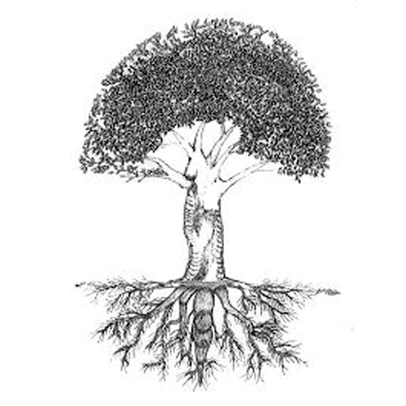

Conferência n°27
TÉCNICA PARA DISSOLVER O EU. OS DETALHES
Este capítulo esotericamente se intitula "A Morte", porque aquele que começa a desintegrar seus defeitos começa a sair do círculo onde está metida toda a humanidade. Então, quando o convidam para sair e "aprontar", os demais dizem: "não serve para nada, este é um morto" porque não segue o caminho dos demais da humanidade.
Todo ser humano leva dentro de si uma chispa divina que se chama Alma, Budhata ou Essência. Enfim, possui diferentes nomes, porém, na realidade, é uma chispa divina que nos impulsiona e nos dá força para empreender o trabalho espiritual, assim como estou ensinando. Essa Essência ou Alma está condicionada em todas as nossas maldades, defeitos ou Eus psicológicos, aos que esotericamente se diz "Ego", que são os que não a deixam manifestar-se com liberdade porque tomam a voz e o comando da pessoa. Já com o trabalho da desintegração dos defeitos, irá crescendo e fortalecendo-se, manifestando-se com mais clareza, com mais força. Irá convertendo-se em Alma.
Vou dar um exemplo: esta árvore está sustentada em suas raízes principais, elas não a alimentam, senão que a mantém firme contra os ventos e o peso de si mesma para não cair, não derrubar-se. E suas raízes pequeníssimas são as que se estendem pela terra e vão absorvendo seu alimento.
Assim mesmo é o nosso Ego ou o da humanidade. As raízes grossas que sustentam a árvore representam os defeitos capitais, como a luxúria, a vingança, a ira, o orgulho, e outros mais.
As raízes pequenas simbolizam os detalhes, aquelas manifestações pequeníssimas que pertencem a tal ou qual defeito, que não cremos que são defeitos, porém que são o alimento dele. O Ego se alimenta por todos esses detalhes diminutos que possuímos em grandes quantidades.
Temos que começar a nos auto-observar para ver os milhares e milhares de detalhes negativos que temos que são os que nutrem o tronco. Assim lhe toca a todo aquele que queira salvar-se do desastre que vem: colocar-se a quitar o alimento desta árvore, que são as raízes diminutas.
Detalhes negativos como os maus pensamentos, o ódio, a inveja que sentimos de outras pessoas, a ambição, recolher moedas e coisas insignificantes, falar mentiras, dizer palavras cheias de orgulho, a cobiça; enfim, todas essas coisas são negativas, e no fundo se deve começar a desintegrá-las seriamente.
Há outra chispa divina que se chama Mãe Divina, cuja missão é desintegrar os defeitos com uma lança que Ela possui. Por diminuto que seja o detalhe devemos pedir a Mãe Divina Interna: "Minha Mãe, tira-me este defeito e desintegra-o com tua lança". Ela assim o fará, porque esta é a sua missão, ajudar-nos dessa forma para irmo-nos liberando. Assim não cresce mais a árvore, senão que irá desnutrindo-se, se irá secando.
O que ensino aqui é para levar à prática, aos fatos: onde vá, esteja trabalhando ou o que estiver fazendo, deve por atenção à mente, coração e sexo. São os três centros por onde se manifesta todo defeito e quando está manifestando-se, seja por qualquer destes três centros, em seguida vem a petição a Mãe Divina para que Ela proceda a desintegrá-lo.
Com este trabalho que estou indicando da Morte do Ego se adquire a castidade científica e se aprende a amar a humanidade. Quem não trabalhe com a desintegração dos defeitos não poderá jamais chegar à castidade, nem pode chegar a sentir amor pelos demais, porque não ama a si mesmo.
A desintegração dos defeitos e o desdobramento astral são as únicas fórmulas para o resgate.
Exemplo: Convidam a uma garota para dançar em uma boate, esta pede permissão a sua mãe, mas a mãe a nega. Imaginemos a reação interior:
- Se sente frustrada.
- Lhe dá ira.
- O amor próprio reage.
- Se compara com suas companheiras.
- Não quer obedecer.
- Um eu diz que a insulte.
- Outro eu quer alegar algo.
- Outro eu chora.
- Outro eu grita e responde com raiva.
- Outro quer golpear.
- Outro quer brigar, discutir.
- Outro quer empurrar.
- Outro eu tem temor pelo que possa fazer o namorado.
- Outro se preocupa que lhe tirarão o namorado.
- Outro se preocupa pelo que dirão os amigos.
- Outro imagina o bem que passarão
- Outro se preocupa pelo que vão pensar.
- Outro eu quer beber.
- ”Não tinha que ter dito nada a esta velha”, diz outro.
- Lhe dá mais raiva.
- Outro eu quer dançar.
- Outro eu se sente entediado.
- Outro quer fumar.
- Outro se sente trancado.
- Outro eu quer suicidar-se.
- Outro diz: “que vida tão entediada”.
- “Por que nasci nesta família?.”
- Outro eu sente ressentimento pela mãe.
- Outro eu queria acariciar o namorado.
- O eu da luxúria protesta.
- O eu da luxúria sofre.
- O eu do ódio sente muito rancor com a mãe.
- Um diz: “tomara morra rápido esta velha!”
- Outro: “algum dia me vingarei!”
- E outro: “não a perdoo”.
- “Talvez sim meu pai deixa.”
- Outro propõe: “melhor escapemos da casa”.
- E outro diz: “me dá medo fazê-lo”.
Passa algum tempo e a jovem continua recordando todo o sofrimento que lhe originou a sua mãe, ainda quer vingar-se, não se cansa de contar às demais pessoas, a má que é a sua mãe, etc.